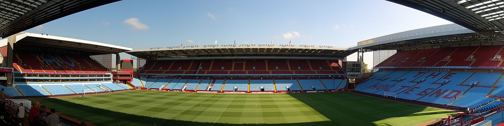

Aston Villa Football Club (commonly referred to as simply Villa) is a professional football club based in Aston, Birmingham, England. The club, founded in 1874, compete in the Premier League, the top tier of English football. The team have played at their home ground, Villa Park, since 1897. Aston Villa are one of the oldest and most successful clubs in England, having won the Football League First Division seven times, the FA Cup seven times, the League Cup five times, and the European Cup and European Super Cup once.
Aston Villa has been a leading English club since the 1880s, when they were pioneers of the modern passing game. This short, slick combination passing style was introduced by Scotsman George Ramsay, who was appointed as the world's first professional football manager in 1886. The club was influential in the sport's move to professionalism in 1885, and it was a Villa director, William McGregor, who founded the world's first Football League in 1888.
George Ramsay's trophy haul of six League Championships and six FA Cups established Aston Villa as the most successful club in England, a position it held from the 1890s until the 1970s. Villa scored 128 goals in season 1930–31, which remains the all-time top-flight record, however the club began its first decline in the mid-1930s the 1940s and 1950s were generally a period of mediocrity followed by a steep decline in the 1960s which culminated in a takeover of the club by Doug Ellis in 1968 and Villa's first and only relegation to the third tier of English football in 1969–70. Villa returned to the elite from the mid-1970s under manager Ron Saunders, who led the club to a seventh top-flight league title in 1980–81. They became only the fourth English club to win the European Cup, in 1981–82, followed by the European Super Cup in 1982.
Aston Villa were a founding member of the Premier League in 1992, one of just three clubs to have been a founding member of both the Football League and the Premier League. he club regularly qualified for European football in the 1990s, but following a period in which the club struggled to compete with the high levels of spending of the leading clubs, Doug Ellis sold his stake in the club to American billionaire Randy Lerner, whose ownership of the club ended with Villa's first and only relegation from the Premier League in season 2015–16. The club returned to the Premier League in 2019.
During their history Villa has spent 111 seasons in the top-flight, the second highest of any club, and provided 78 England internationals, also the second highest of any club. Aston Villa is currently ranked 5th in the all-time English top flight table, since its creation in 1888 and is the seventh most successful club in English football by competitive honours.
Villa have a fierce local rivalry with Birmingham City and the Second City derby between the teams has been played since 1879. There is also a local rivalry with West Bromwich Albion, with matches between the sides known as the West Midlands derby. The club's traditional kit colours are claret shirts with sky blue sleeves, white shorts and sky blue socks. Their traditional club badge is of a rampant lion. The club is currently owned by V Sports, a company owned by the Egyptian billionaire Nassef Sawiris, the American billionaire Wes Edens, and American investment company Atairos.
List Content
History
Formation and rise to prominence (1874−1886)
Aston Villa Football Club are believed to have formed on 21 November 1874, by members of the Villa Cross Wesleyan Chapel in Handsworth: which is now part of Birmingham. The four founders of Aston Villa were Jack Hughes, Frederick Matthews, Walter Price and William Scattergood, who were members of the chapel's cricket team looking for a way to stay fit during the winter months. Due to the lack of local football teams Aston Villa's first match was against the local Aston Brook St Mary's Rugby team. As a condition of the match, the Villa side had to agree to play the first half under Rugby rules and the second half under Association rules. Villa won their first game 1–0.
The infant club's fortunes changed forever when a young Scotsman called George Ramsay stumbled across the Villa players' practice match in Aston Park in 1876. He was asked to make up the numbers, and they were amazed by his skills; they had never seen such a display of close ball control before. When the game was over, the Villa players surrounded him and invited him to join the club and become their captain. Word spread about how fine a player Ramsay was, spectators began turning up to watch the little man nicknamed ‘Scotty’. He also took charge of training, Ramsay later described the newly formed club's approach to the game as 'a dash at the man and a big kick at the ball'. Ramsay was influenced by the Scottish club, Queen's Park, who pioneered what became known as 'combination football' in his native Glasgow, the intricate passing game he introduced was a revolutionary move for an English club in the late 1870s.
Villa began to establish themselves as one of the best teams in the Midlands, winning their first honour, the Birmingham Senior Cup in 1880. The club would go on to lift the trophy 9 times in the next 12 seasons.
1912-1925: Bank of England club
In 1913, soon after relegation back to the Second Division, the club moved across the river to the new Arsenal Stadium in Highbury. In 1919, the Football League controversially voted to promote The Arsenal, instead of relegated local rivals Tottenham Hotspur, into the newly enlarged First Division, despite only finishing fifth in the Second Division's last pre-war season of 1914-15. Later that year, The Arsenal started dropping "The" in official documents, gradually shifting its name for the final time towards Arsenal, as it is generally known today.
With a new home and First Division football, attendances were more than double those at the Manor Ground, and Arsenal's budget grew rapidly. With record-breaking spending and gate receipts, Arsenal quickly became known as the Bank of England club.
Victorian and Edwardian golden age (1886–1914)
Following the professionalisation of football in 1885, the club decided that it needed a full-time paid manager. The following advert was placed in the Birmingham Daily Gazette newspaper in June 1886:
'Wanted: manager for Aston Villa Football Club, who will be required to devote his whole time under direction of the committee. Salary £100 per annum. Applications with reference must be made not later than June 23rd to Chairman of the Committee, Aston Villa Club House, 6 Witton Road, Aston’
Villa received 150 applicants for the role, but with his strong association with the club George Ramsay was the overwhelming choice of the membership. Thus on 26 June 1886, Aston Villa appointed what has been described as the world's first professional football manager.
The following season Aston Villa rose to national prominence, as the first Midlands team to win the FA Cup in 1887. Villa's captain, the powerful Scottish centre-forward Archie Hunter became one of the game's first household names, being the first player to score in every round of the FA Cup. Aston Villa were one of the dozen teams that competed in the inaugural Football League in 1888 with one of the club's directors, William McGregor being the league's founder. Following the professionalisation of football in 1885, clubs needed regular income to pay their players' wages. Frequently friendlies were cancelled due to opponents' FA Cup or county cup matches or clubs simply failed to honour a fixture in favour of a more lucrative match elsewhere. McGregor took action after seeing Villa matches cancelled, to the increasing frustration of the club's fans, on five consecutive Saturdays. In March 1888, he wrote to the committee of his own club, Aston Villa, as well as to those of Blackburn Rovers, Bolton Wanderers, Preston North End and West Bromwich Albion, suggesting the creation of a league competition that would provide a number of guaranteed fixtures for its member clubs each season. Following two meetings between representatives of the leading clubs, the world's first Football League season began in September 1888 with 12 member clubs from the Midlands and north of England: Accrington, Aston Villa, Blackburn Rovers, Bolton Wanderers, Burnley, Derby County, Everton, Notts County, Preston North End, Stoke, West Bromwich Albion and Wolverhampton Wanderers.
Despite Villa founding the league, by 1893 they had yet to win it. Villa Committee Member Frederick Rinder was the instigator of a club meeting at Barwick Street in February 1893 that removed the committee running the club at the time. All fourteen committee members resigned and were replaced by a committee of five led by Rinder after he gave a rousing speech criticising the board's tolerance of ill discipline and players' drinking. On the pitch, manager George Ramsay was moulding a team that became renowned for its short, quick combination passing which saw Villa win its first league title in 1893–94 the season after that the club won its second FA Cup in 1894-95. This was followed by back-to-back League titles in 1895–96 and 1896–97.
Aston Villa emerged as the most successful English club of the Victorian era, winning no fewer than five League titles and three FA Cups by the end of Queen Victoria's reign in 1901. Villa's captain during this era was Birmingham-born forward John Devey, who enjoyed a successful partnership with the lightning-fast winger Charlie Athersmith and marshalling Villa's defence was the tough-tackling Scotsman James Cowan, who had an unrivalled sense of timing and anticipation.[27] In 1897, the year Villa won The Double, they moved into their present home, the Aston Lower Grounds. Supporters coined the name "Villa Park" no official declaration listed the ground as Villa Park.
Success continued into the Edwardian era, with Villa lifting the FA Cup for the fourth time in 1904–05, and a sixth league title in 1909–10. A further FA Cup triumph was achieved on the eve of the First World War in 1913, with the club narrowly missing out on winning a second Double, finishing runners-up in the league. Star-players during this era included Howard Spencer, the cultured defender who captained both Villa and England, and the prolific strike force of Joe Bache and Harry Hampton who between them scored 382 goals in claret and blue.
Relative decline and first relegation (1920–1939)
In January 1920, Billy Walker scored twice on his Villa debut in a 2–1 FA Cup first-round win over QPR the club won the FA Cup for the sixth time that season and Walker went on to establish himself as Villa's star player of the 1920s, scoring a record 244 goals in 531 appearances, captaining Villa and England. George Ramsay retired in 1926, at the age of 71, his replacement Billy Smith was unable to continue Ramsay's success, in reality several other football clubs had caught up with Aston Villa, most notably Arsenal, who the club finished runners-up to in the league in 1930–31 and 1932–33. Despite missing out on the league title, Villa Park crowds were entertained by attacking football, the 128 goals scored in 1930–31, remains the all-time top-flight record to the present day. A remarkable 49 of the league goals that season were scored by centre-forward Tom 'Pongo' Waring, with another 30 goals from winger Eric Houghton.
The club appointed Jimmy McMullan as manager in 1934, however, the move proved disastrous, resulting in Villa's first ever relegation in 1935–36 after 48 years in the top flight. Villa struggled largely due to a dismal defensive record: they conceded 110 goals in 42 games, 7 of them coming from Arsenal's Ted Drake in an infamous 1–7 defeat at Villa Park. The club made seven signings and spent a staggering sum for the time of £35,500 trying to retain top-flight status at all costs, but were unable to buy their way out of trouble. Aston Villa, at the time one of the most famous and successful clubs in world football, was relegated in 1936 for the first time in its history.
Following relegation to the Second Division, the Villa board brought back the ageing former club chairman Fred Rinder, who said on his return "Villa have been a great club, are still a great club, and always will be a great club". He was vocal in his criticism of the board for its "almost total neglect of the reserve team, instead relying on paying big fees for ready made players". He believed that this change in policy from scouting and developing young homegrown talent led to a decline in the club's culture and style of play, which alongside a tolerance of ill-discipline in the players led to Villa's relegation. Rinder's first act was to travel to Austria to recruit the progressive coach Jimmy Hogan as manager. Within two seasons, Hogan had guided Villa back to the top flight as Second Division champions playing attractive free-flowing football. Hogan outlined his philosophy: "I am a teacher and lover of constructive football with every pass, every kick, every movement an object. " He used to tell his players that "football was like a Viennese waltz, a rhapsody. One-two-three, one-two-three, pass-move-pass, pass-move-pass." Unfortunately, the Second World War ended Hogan's project to restore Aston Villa to the top of the English game.
Mediocrity and discontent (1945–1961)
Like all English clubs, Villa lost seven seasons to the Second World War, and that conflict brought several careers to a premature end. Bumper crowds flocked to Villa Park following the war, 76,588 people attended the FA Cup quarter-final between Villa and Derby County in March 1946, which is the all-time record attendance at Villa Park. The team was rebuilt under the guidance of former player Alex Massie for the remainder of the 1940s. Star players of this era included the one-club man Harry Parkes, the Welsh centre forward Trevor Ford and inside-forward Johnny Dixon, however the club only achieved mid-table finishes throughout the forties and fifties, never finishing higher than 6th place in the league. The board came in for increasing criticism during this time, with the 1953 AGM described by the Sports Argus as "the longest and liveliest Villa meeting". Shareholders and supporters criticised the club's lack of youth development, recruitment and training methods. When Danny Blanchflower put in a transfer request in 1954 he said that "the club had grown fat and lazy on its old traditions and the decay was eating at the once solid foundations".
Despite narrowly avoiding relegation the season before, Aston Villa's first trophy for 37 years came in the 1956–57 season when another former Villa player, Eric Houghton led the club to a then record seventh FA Cup Final win, defeating the 'Busby Babes' of Manchester United 2–1 with Northern Irish winger Peter McParland scoring both goals. The team continued to struggle for consistency in the league though, which led to Eric Houghton being sacked in December 1958. His replacement Joe Mercer could not prevent the club being relegated for only the second time in their history in 1958-59. However, under the stewardship of Mercer, Villa returned to the top-flight in 1960 as Second Division Champions with a talented young side which became known as 'Mercer's Minors'. The following season Aston Villa became the first team to win the Football League Cup with England centre-forward Gerry Hitchens scoring an impressive 42 goals in 1960-61.
Deep malaise and revival (1961–1974)
Hitchens' goals brought him to the attention of Italian club Inter Milan, who offered him a large financial incentive to sign. He was sold for £85,000 in summer of 1961, his replacement, Derek Dougan was not a success and Villa slid backwards. Mercer's forced retirement from the club in July 1964, following a stress-induced stroke, signalled a period of deep turmoil and malaise. The most successful club in England had failed to keep pace with changes in the modern game three of the five-man board of directors were over 70 years old, the club had neglected its scouting network and coaching structure and the club's finances were in a parlous state. This led to the club selling its top striker Tony Hateley to Chelsea for £100,000 in October 1966, without his goals Villa were relegated for the third time in its history, under manager Dick Taylor in 1967. The board even sold the club's training ground outside Villa Park for housing, leaving the team in the position of training on borrowed training pitches of local factory teams.
The following season the fans called for the board to resign as Villa finished 16th in the Second Division. With mounting debts and Villa lying at the bottom of Division Two, the board sacked Tommy Cummings (the manager brought in to replace Taylor), and within weeks the entire board resigned under overwhelming pressure from fans. After much speculation, control of the club was bought by London financier Pat Matthews, who brought in Doug Ellis as chairman in December 1968. Ellis later recalled that "you could write your name in the dust, window frames were rotting, the smell of failure and imminent financial ruin hung in the air" one of their first acts was to raise £205,835 in a share issue which cleared the club's debts. Doug Ellis's first managerial appointment was the outspoken Scottish manager Tommy Docherty, who after initial success, was sacked after 13 months in charge with the club at the foot of Second Division. His replacement was former club captain and reserve team manager Vic Crowe, who could not prevent Villa being relegated to the Third Division for the first time in its history at the end of the 1969–70 season.
The following season Villa surprised everyone by beating Manchester United in the two-legged semi-final to reach the 1971 League Cup Final, in which the team played well but were defeated by two late Tottenham Hotspur goals. There was a renewed sense of optimism at Villa Park as the club was promoted to the Second Division as champions with average attendances of 30,000 and a record 70 points in 1971–72 season. Off the pitch, the board purchased the new 20-acre Bodymoor Heath Training Ground in December 1971, with a view to improving the club's youth development and coaching facilities.
Back among the elite (1974–1992)
Following a 14th-place finish in the Second Division, Crowe was replaced in August 1974 by Ron Saunders. He was a fitness fanatic, whose brand of no-nonsense man-management proved effective, with the club winning the League Cup the following season and, by the end of season 1974–75, he had taken Aston Villa back into the First Division and into Europe. One player who had been a mainstay of the Villa team throughout the rollercoaster of relegations and subsequent revival was fan-favourite Charlie Aitkin, who made 659 appearances at left back for the club between 1959 and 1976, making him Villa's all-time record appearance holder.
Aston Villa were back among the elite as Saunders continued to mould a winning team, finishing 4th in the league and winning a further League Cup in 1976–77, with the formidable strike partnership of Brian Little and Andy Gray, who became the first player to win both the PFA Young Player of the Year and PFA Players' Player of the Year in the same season.
The 1970s was an era of boardroom unrest at Villa Park. Ron Saunders had a strained relationship with Doug Ellis, resenting Doug's perceived interference in football matters. Over time Ellis became an isolated figure on the board, as the other directors sided with Saunders. He was ousted as chairman in 1975 to make way for Sir William Dugdale. He remained on the board until 1979, when he left the club after a protracted power struggle with majority shareholder Ron Bendall. With Ellis gone, Saunders became all-powerful as manager.
Villa achieved a seventh top-flight league title in 1980–81, with players such as Gordon Cowans, Tony Morley and captain Dennis Mortimer leading the club to its first top-flight title in 71 years. Remarkably, they did so using just 14 players, with seven players being ever-presents. Villa's Birmingham-born forward Gary Shaw was named 1980-1981 PFA Young Player of the Year.
To the surprise of commentators and fans, Ron Saunders quit halfway through the 1981–82 season, with Villa in the quarter final of the European Cup. Saunders had expressed his exasperation with the board at the lack of funds available to him to strengthen the team and fell out with the chairman Ron Bendall over the terms of his contract. He was replaced by his softly-spoken assistant manager Tony Barton who guided the club to a 1–0 victory over Bayern Munich in the European Cup final in Rotterdam courtesy of a Peter Withe goal in the 67th minute. Ten minutes into the final, Villa's first choice goalkeeper, Jimmy Rimmer, was injured and young substitute keeper Nigel Spink was called into action, having only made one previous appearance in the first team. Spink performed superbly, keeping a clean sheet, and helping Villa become only the fourth English club to lift the European Cup.
The following season the defence of the European Cup ended in a quarter-final defeat to Juventus, but Villa won the European Super Cup, beating Barcelona 3–1 on aggregate. This marked a pinnacle though and Villa's fortunes declined sharply for most of the 1980s. Doug Ellis returned as chairman and majority shareholder in November 1982. The club was saddled with significant debts and questions had been raised by the police regarding fraudulent financial activity surrounding the building of the North Stand at Villa Park from 1980 to 1982. The cost of the work was £1.3 million. An internal investigation found that £700,000 of the £1.3 million worth of bills were unaccounted for. A later report by accountants Deloitte found that there were "serious breaches of recommended codes of practice and poor site supervision". Ellis immediately set about trying to reduce the club's overheads. He informed the players that they needed to take pay cuts and told the manager Tony Barton that there was a need to reduce the playing staff. Saunders' team was broken up and not adequately replaced, culminating in the club being relegated in 1987, just five years after Villa had been crowned European champions.
However, Villa bounced back quickly, achieving promotion the following year under Graham Taylor and a runners-up position in the top-flight in the 1989–90 season with a fine side that included Paul McGrath, Tony Daley and David Platt. Following this success, Graham Taylor accepted the offer to take over as England manager in 1990.
1996-2018: Arsene Wenger years
The club metamorphosed during the tenure of French manager Arsène Wenger, who was appointed in 1996. Attacking football, an overhaul of dietary and fitness practices, and elite scouting defined his reign. Accumulating key players from Wenger's homeland, such as Patrick Vieira and Thierry Henry, Arsenal won a second League and Cup double in 1997-98 and a third in 2001-02. In addition, the club reached the final of the 1999-2000 UEFA Cup, were victorious in the 2003 and 2005 FA Cup finals, and won the Premier League in 2003-04 without losing a single match, an achievement which earned the side the nickname "The Invincibles". This feat came within a run of 49 league matches unbeaten from 7 May 2003 to 24 October 2004, a national record.
24 years in the Premier League (1992–2016)
Villa were one of the founding members of the Premier League in 1992, one of just three clubs to have been founding members of both the Football League in 1888 and the Premier League, along with Blackburn Rovers and Everton. Villa finished runners-up to Manchester United in the inaugural season under manager Ron Atkinson. His side lifted the League Cup in 1994, beating Manchester United 3–1 in the final, with goals from Dalian Atkinson and Dean Saunders, but the team struggled for form in the league and Atkinson was replaced by former Villa striker Brian Little in November 1994. Little assembled a young side which included players as Gareth Southgate, Steve Staunton, Ian Taylor and Dwight Yorke, leading the club to a fifth League Cup triumph in 1996, beating Leeds United 3–0 at Wembley. Villa finished fourth in the league that season, and fifth the season after.
Following a dip in form, Doug Ellis sacked Little and replaced him with another former Villa player John Gregory in February 1998. One of his first matches in charge was the UEFA Cup quarter-final against Atlético Madrid, which Villa lost on away goals over two-legs. In the summer of 1998, Yorke was transferred to Manchester United for £12.6 million. Gregory managed four top-eight finishes in the league and took the club to an FA Cup final in 2000 with a side that included David James, Dion Dublin, Paul Merson and Gareth Barry but was unable to assemble a team capable of challenging for Champions League places. At the end of the season Villa's captain Gareth Southgate handed in a transfer request, claiming that "if I am to achieve in my career, it is time to move on". Gregory's frustration at the lack of investment in the team led to him publicly accusing Ellis of being "stuck a time warp" their relationship remained strained until Gregory resigned in January 2002.
Ellis appointed Graham Taylor for a second spell in February 2002, but a 16th-place finish in the league led to his replacement with David O'Leary in June 2003. After a sixth-place finish in his first season, Villa the finished 10th and 16th, leading to O'Leary leaving in the summer of 2006.
After 23 years as chairman and single biggest shareholder (approximately 38%), Ellis sold his stake in Aston Villa due to ill-health at the age of 82. American businessman Randy Lerner, owner of NFL franchise the Cleveland Browns, completed his takeover in September 2006. The arrival of a new owner in Lerner and of manager Martin O'Neill marked the start of a new period of optimism at Villa Park and sweeping changes occurred throughout the club including a new badge, investment in state-of-the-art facilities at the Bodymoor Heath Training Ground and significant investment in the squad in the summer of 2007. The first Cup final of the Lerner era came in 2010 when Villa were beaten 2–1 in the League Cup Final.
Just five days before the opening day of the 2010–11 season, O'Neill resigned as manager, despite three consecutive 6th-place finishes, due to frustration in the lack of investment in the squad, following the sale of star players Gareth Barry, James Milner and Ashley Young. His replacement Gérard Houllier stepped down due to ill-health in September 2011, to be replaced by Birmingham City manager Alex McLeish, despite fan protests against his appointment. McLeish's contract was terminated at the end of the 2011–12 season after Villa finished in 16th place, and he was replaced by Paul Lambert.
In February 2012, the club announced a financial loss of £53.9 million, and Lerner put the club up for sale three months later. With Lerner still on board, but unwilling to spend following the stock market crash of 2008, the club was uncompetitive for several seasons, culminating in the 2014–15 season, when Lambert was sacked in February 2015 after the team managed just 12 goals in the first 25 league games, the lowest in Premier League history. Tim Sherwood succeeded him, and steered the club away from relegation while also leading them to the 2015 FA Cup Final. However, the club sold two of its star players Christian Benteke and captain Fabian Delph in the summer transfer window and did not adequately replace them. Villa struggled in the 2015–16 season, and Sherwood was sacked following six consecutive defeats. He was replaced by Rémi Garde, who left after just five months with Villa lying bottom of the table his reign included a club-record 19 game winless run. The club was relegated at the end of the season, ending their 29-year stay in the top flight.
Championship to Champions League (2016–present)
In June 2016, Chinese businessman Tony Xia bought the club for £76 million. Former Chelsea boss Roberto Di Matteo was appointed as the club's new manager, but was sacked after just 12 games following a poor start to the season. He was replaced by former Birmingham manager Steve Bruce. Bruce led the team to finish fourth in the 2017–18 season, but lost in the 2018 EFL Championship play-off final to Fulham.
Following failure to secure promotion to the Premier League, the club faced significant financial difficulties. Following rumours that administration was imminent, Xia looked to sell the club. On 20 July 2018 it was announced that the NSWE Group, a consortium consisting of Egyptian billionaire Nassef Sawiris and the American billionaire Wes Edens, were to invest in the football club. They purchased a controlling 55% stake in the club, and Sawiris took over the role of club chairman, appointing Christian Purslow as CEO.
In October 2018, Bruce was sacked after winning only once in a nine match stretch. He was replaced by Brentford manager and boyhood Villa fan Dean Smith, who led the team to fifth place, and reaching the playoffs again—helped on by a club-record 10 league game winning streak. They reached the 2019 EFL Championship play-off final and defeated Derby County 2–1 to gain promotion back to the Premier League after a three-year absence.
On the eve of Villa's Premier League return, Recon Group's minority share ownership was bought out by NSWE, meaning Xia no longer had any stake in the club. Villa's first season back in the Premier League saw a significant overhaul of the squad, with 12 players signed during the summer transfer window. The team battled relegation for most of the season, but stayed up on the final day with a 17th-place finish, staying up on the final day. In Villa's second season back in the Premier League, Smith oversaw an 11th-place finish, but was unable to persuade star player and captain Jack Grealish to remain at the club after Manchester City's British-record £100 million bid triggered his release clause. Following a poor start to the 2021–22 season, which saw seven losses in the club's opening 11 games, Dean Smith was dismissed.
Aston Villa appointed former Liverpool and England captain Steven Gerrard as head coach on 11 November 2021. After a poor start to the 2022–23 season, in which Villa won just twice and scored only seven goals in their opening 11 games, Gerrard was sacked in October 2022, and replaced by four-time Europa League-winning Spanish manager Unai Emery. He led Villa to 7th place and qualification for the Europa Conference League in his first season. In the 2023–24 season, Emery led the club to the Conference League semi-finals, and a 4th-place finish in the league, securing participation in the UEFA Champions League for the first time since 1982–83.
Kit suppliers and Shirt sponsors
| AstonVilla Kits | ||||
|---|---|---|---|---|
| Period | Kit manufacturer | Shirt sponsor (chest) | Shirt sponsor (sleeve) | Shirt sponsor (back) |
| 1974–1981 | Umbro | None | None | None |
| 1981–1982 | Le Coq Sportif | |||
| 1982–1983 | Davenports Brewery | |||
| 1983–1984 | None | |||
| 1984–1985 | Mita Copiers | |||
| 1985–1987 | Henson | |||
| 1987–1990 | Hummel | |||
| 1990–1993 | Umbro | |||
| 1993–1995 | Asics | Müller | ||
| 1995–1998 | Reebok | AST Computers | ||
| 1998–2000 | LDV Vans | |||
| 2000–2002 | Diadora | NTL | ||
| 2002–2004 | Rover | |||
| 2004–2006 | Hummel | DWS Investments | ||
| 2006–2007 | 32Red | |||
| 2007–2008 | Nike | |||
| 2008–2010 | Acorns Children's Hospice | |||
| 2010–2011 | FxPro | |||
| 2011–2012 | Genting Casinos | |||
| 2012–2013 | Macron | |||
| 2013–2015 | Dafabet | |||
| 2015–2016 | Intuit Quickbooks | |||
| 2016–2017 | Under Armour | |||
| 2017–2018 | Unibet | Recon Group | ||
| 2018–2019 | Luke 1977 | 32Red | None | |
| 2019–2020 | Kappa | W88 | BR88 | |
| 2020–2021 | Cazoo | LT.COM | ||
| 2021–2022 | OB Sports | |||
| 2022–2023 | Castore | Kaiyun Sports | ||
| 2023–2024 | BK8 | Trade Nation | ||
| 2024– | Adidas | Betano | Black Sabbath (League Cup) | |
Stadiums
Aston Villa's current home venue is Villa Park the team previously played at Aston Park (1874–1876) and Wellington Road (1876–1897). Villa Park is the largest football stadium in the English Midlands, and the eighth largest stadium in England. It has hosted 16 England internationals at senior level, the first in 1899, and the most recent in 2005. Thus, it was the first English ground to stage international football in three different centuries. Villa Park is the most used stadium in FA Cup semi-final history, having hosted 55 semi-finals. In 2022, the club announced plans to rebuild the North Stand and part of the Trinity Road stand, which will take the maximum capacity over 50,000.
The current training ground is located at Bodymoor Heath near Kingsbury in north Warwickshire, the site for which was purchased by former chairman Doug Ellis in the early 1970s from a local farmer. Although Bodymoor Heath was state-of-the-art in the 1970s, by the late 1990s the facilities had started to look dated. In November 2005, Ellis and Aston Villa plc announced a state of the art £13 million redevelopment of Bodymoor in two phases. The new training ground was officially unveiled on 6 May 2007, by then manager Martin O'Neill, then team captain Gareth Barry and 1982 European Cup winning team captain Dennis Mortimer, with the Aston Villa squad moving in for the 2007–08 season.
It was announced on 6 August 2014, that Villa Park would appear in the FIFA video game from FIFA 15, with all other Premier League stadiums also fully licensed from this game onwards.
A panorama of Villa Park from the Trinity Road Stand, showing from left to right the North Stand, the Doug Ellis Stand and the Holte End
Honours
| Aston Villa honours | |||
|---|---|---|---|
| Type | Competition | Titles | Seasons |
| Domestic | First Division/Premier League | 7 | 1893–94, 1895–96, 1896–97, 1898–99, 1899–1900, 1909–10, 1980–81 |
| Second Division / Championship | 2 | 1937–38, 1959–60 | |
| Third Division | 1 | 1971–72 | |
| FA Cup | 7 | 1886–87, 1894–95, 1896–97, 1904–05, 1912–13, 1919–20, 1956–57 | |
| EFL Cup | 5 | 1960–61, 1974–75, 1976–77, 1993–94, 1995–96 | |
| FA Charity Shield | 1 | 1981 | |
| Sheriff of London Charity Shield | 2 | 1899, 1901 | Continental | European Cup | 1 | 1981–82 |
| European Super Cup | 1 | 1982 | |
| Intertoto Cup | 1 | 2001 |
Players
First-team squad
| No. | Pos. | Nation | Player |
|---|---|---|---|
| 2 | Def | Poland | Matty Cash |
| 4 | Defender | England | Ezri Konsa |
| 5 | Defender | England | Tyrone Mings |
| 6 | Defender | England | Ross Barkley |
| 7 | Midfield | Scotland | John McGinn (captain) |
| 8 | Midfield | Belgium | Youri Tielemans |
| 11 | Forward | England | Ollie Watkins |
| 12 | Defender | France | Lucas Digne |
| 14 | Defender | Espanyol | Pau Torres |
| 16 | Defender | Espanyol | Andrés García |
| 17 | Forward | Netherlands | Donyell Malen |
| No. | Pos. | Nation | Player |
|---|---|---|---|
| 20 | Defender | Serbian | Kosta Nedeljković |
| 22 | Defender | Netherlands | Ian Maatsen |
| 23 | Goalkeeping | Argentina | Emiliano Martínez (vice-captain) |
| 24 | Midfield | Belgium | Amadou Onana |
| 25 | GoalKeeper | Sweden | Robin Olsen |
| 26 | Midfield | Netherlands | Lamare Bogarde |
| 27 | Forward | England | Morgan Rogers |
| 30 | Defender | England | Kortney Hause |
| 31 | Forward | Jamaica | Leon Bailey |
| 41 | Midfield | England | Jacob Ramsey |
| 44 | Midfield | France | Boubacar Kamara |
Management and staff
Current staff
| Position | Name |
|---|---|
| Manager | Unai Emery |
| Assistant coaches | Pako Ayestarán |
| Pablo Villanueva | |
| Rodri | |
| Austin MacPhee | |
| Goalkeeping coach | Francisco Javier Garcia |
| Academy manager | Mark Harrison |
| Head of sports medicine and performance | Ricky Shamji |
| Managing director | Monchi |
| Chief commercial officer | Ron Erskine |
| President of Business Operations | Chris Heck |
| Director of football operations | Damian Vidagany |
Arsenal board
| Position | Name |
|---|---|
| Executive Chairman | Nassef Sawiris |
| Co-chair | Wes Edens |
| Executive Vice-chair | Ryan Disdier |